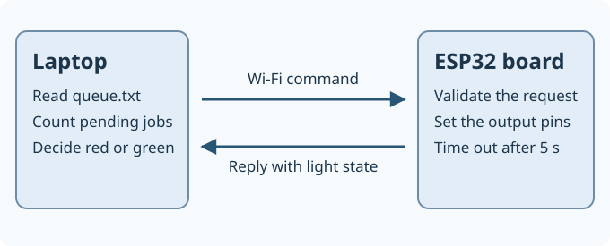
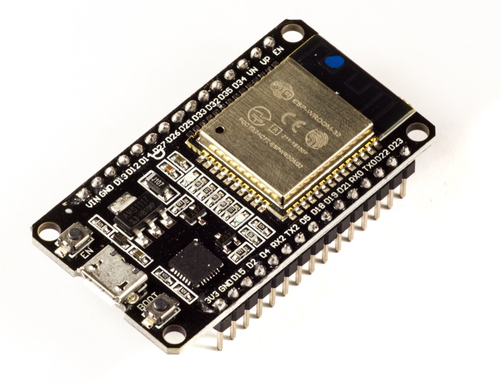
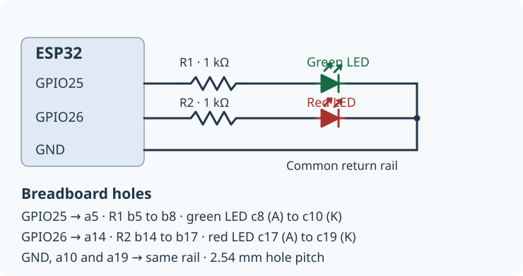

Control a circuit from your laptop over Wi-Fi
Build a wireless status light for your workshop. Your laptop reads a job list, counts the jobs and decides whether to show green or red. A separately powered ESP32 board receives the command and switches the light.
The laptop decides and the board executes


The ESP32 creates its own local Wi-Fi network. You can run it without a router or internet connection. The laptop can use the same design to process a spreadsheet, a camera image or an AI result later. Only the laptop’s decision rule changes if the board keeps the same commands.
Parts to buy or reuse



| Qty and part | Specification | Australia | India |
|---|---|---|---|
| 1 · ESP32 development board View board | Assembled classic ESP32 with WROOM-32 or WROOM-32E module, USB serial and fitted header pins. Check GPIO25, GPIO26 and GND. For this pin map, buy the classic ESP32 version. | MLAB · ESP32-DevKitC V4 32E, A$23.84 listed | QuartzComponents · 30-pin CP2102, ₹375 listed |
| 1 · Solderless breadboard View breadboard | 400 or 830 tie points, 2.54 mm hole pitch, one usable return rail. Photo by Evan-Amos, public domain, resized. | Core Electronics · BB830 | RoboticsDNA · MB102 |
| 2 · Axial resistors View resistors | 1 kΩ, ¼ W or higher, ±5% or better. Photo by David Ludovino, CC BY-SA 3.0, resized. | Jaycar · RR0572 | QuartzComponents · 1 kΩ pack |
| 2 · LEDs View LED leads | One red, one green. Standard 3 or 5 mm two-lead types, preferably visible below 2 mA. Check polarity before trimming. Photo by Elmepi, CC BY 2.0. | Jaycar · Red LED and green LED. | QuartzComponents · Red LED and green LED |
| 5 · Jumpers View jumper ends | Three female-to-male for the ESP32 headers and two male-to-male for the breadboard. 10–20 cm is enough. Photo by Edwiyanto, CC BY-SA 4.0, resized. | Core Electronics · Female-to-male and male-to-male jumpers. | QuartzComponents · Combo pack |
| 1 · USB data cable View USB ends | Match both ports. The photo shows Micro-USB at the far left and USB-A at the far right. Many newer laptop or board ports use USB-C. Reuse a cable you know transfers data. Photo by George Shuklin, public domain, resized. | Use a local computer shop or the cable that came with the board. For the standalone test, borrow a 5 V USB power bank or a regulated USB charger that can supply at least 1 A. | |


Use your laptop, a plain-text editor and a digital multimeter with leads. View the meter Photo by Anselm Schüler, CC BY-SA 4.0. The board comes assembled, and the two LED circuits plug into the breadboard without soldering.


1 · Wire and check two LED branches


- With USB unplugged, place the board on an insulating surface beside the breadboard. Connect its GND to the breadboard’s blue return rail with a female-to-male jumper. Check continuity along the part of the rail you plan to use. Some rails are split in the middle.
- Build each branch using the holes below. One numbered strip connects a–e together on one side of the centre gap. For each resistor, the holes listed are three pitches (7.62 mm) apart. For each LED, the holes are two pitches (5.08 mm) apart. Spread long leads gently. A jumper from the marked cathode’s strip goes to the return rail.
- Power still off, measure each loose resistor if its bands are unclear. Recheck GPIO25 and GPIO26 against the pin labels. A GPIO high is about 3.3 V. With the resistor in place, even a short across the LED would draw only about 3.3 mA at 3.3 V. Connect USB power only after checking the wiring.
| Output | Board to breadboard | 1 kΩ resistor | LED anode and cathode | Return |
|---|---|---|---|---|
| Green | GPIO25 → a5 | b5 to b8 | c8 (A), c10 (K) | a10 → same GND rail |
| Red | GPIO26 → a14 | b14 to b17 | c17 (A), c19 (K) | a19 → same GND rail |
2 · Upload the board program
Download queue-light.ino into a folder named queue-light. Download queue_light.py into the same working folder for the laptop steps.
- Install Arduino IDE. In its preferences add the Espressif Boards Manager URL below, then install esp32 by Espressif Systems. The project uses the 3.3.8 board package. Espressif · IDE installation steps.
- Open the sketch. Replace the example
labPassphrasewith an 8–63 character passphrase for this lab. Connect the ESP32 over USB. Select ESP32 Dev Module and the USB serial port it appeared on. Upload. Open Serial Monitor at 115200 baud, and press EN or RESET if the startup message has scrolled by. Look forQueue light ready at 192.168.4.1. Both external LEDs should be off. - On your laptop, join ECE-Queue-Light using the passphrase you put in the sketch. Your operating system may say the network has no internet. Stay on it for this test. The board’s USB connection can now supply power while the laptop sends data over Wi-Fi. Espressif · Wi-Fi access point mode.
https://espressif.github.io/arduino-esp32/package_esp32_index.jsonWatch on YouTube · Introduction to ESP32 – Getting Started · DroneBot Workshop
Watch how the demonstrator picks a board profile and USB port and uploads a first sketch. Use the board package and sketch above for this project.
3 · Send a command and test each light
Use Python 3 on the laptop. Open Terminal at the folder holding queue_light.py. On Windows use py -3 in place of python3. Run each line separately. Set the meter to DC volts. Put the black probe on the return rail and the red probe on a spare hole in the driven GPIO’s strip, such as d5 or d14. A helper can type the command while you read the meter because the light stays on for five seconds.
python3 queue_light.py status
python3 queue_light.py set green
python3 queue_light.py set red
python3 queue_light.py set off| Command or condition | Expected reply or light | What to check |
|---|---|---|
Boot, then status | ESP32: off | Both external LEDs dark. |
set green or set red | Only the named LED on | About 3.0–3.4 V at the requested GPIO, under 0.2 V at the other. A reply confirms the pin state requested by software. The LED and meter confirm the electrical result. |
| Wait six seconds after the last colour command | Both LEDs dark. status reads off. | Reading status does not extend the five-second timer. |
| Connect the ESP32 to a USB power bank instead of the laptop | Same result after rejoining the board’s network | Repeat a colour command with the laptop cable disconnected. Some power banks shut off automatically at low load. Use a known always-on 5 V USB source if this happens. |
4 · Let the laptop decide from real data
In the same folder, make a plain-text file named queue.txt. Save it empty and run the command below. Add a line such as Inspect blower wiring in your editor and save it again. The light changes to red. Remove all lines and save, and it goes green. Each nonempty line counts as one job.
python3 queue_light.py watch queue.txtPython reads the file, applies the rule and renews the command about once a second. Press Ctrl+C to stop and send off. To test a lost link, leave the board powered, run the watcher and disconnect the laptop from its Wi-Fi. The LED should go out within about five seconds of the most recent command that reached the board.
The message 1a2b3c4d red is one UDP datagram to port 4210. The board checks the command, sets GPIO26 high and sends 1a2b3c4d red back to confirm. The eight matching characters let the laptop tell which request the reply belongs to. If a reply is missing, the laptop reports it. The timeout runs on the board even when the laptop is disconnected.
Find the fault by following the chain
- No USB serial port. Try a known data cable and watch the port list when you unplug and replug the board. Use the board supplier’s USB serial driver instructions if needed.
- No board reply. Verify the ESP32’s Wi-Fi name and IP from Serial Monitor. Join the board again if the laptop switched back to your home Wi-Fi. If Serial Monitor shows a different board IP, use
python3 queue_light.py --host <board-ip> statuswith the printed address. - Reply arrives but LED stays dark. Check the GPIO voltage first, then measure the drop across the resistor. Power off before moving a lead. Double-check LED polarity, the numbered strips and the GND rail. A modern green LED with a high forward voltage may be very dim at this current.
- Queue stays red. Check that the editor saved the very same
queue.txtfile as plain text. A single nonblank line keeps red on. The laptop prints the count to help you check the rule.
To add motion later, start with the low-voltage driver in P13 · Actuators and the local stop logic in P27 · Timed controllers. A motor needs its own rated driver and power path. Keep limit switches and emergency stopping local to the equipment. For a shared network and multiple boards, continue with P18 · Wi-Fi and MQTT.
The component photos show the individual parts. The two drawings show the proposed build and its wiring. The circuit still needs a physical bench check using the acceptance table above.